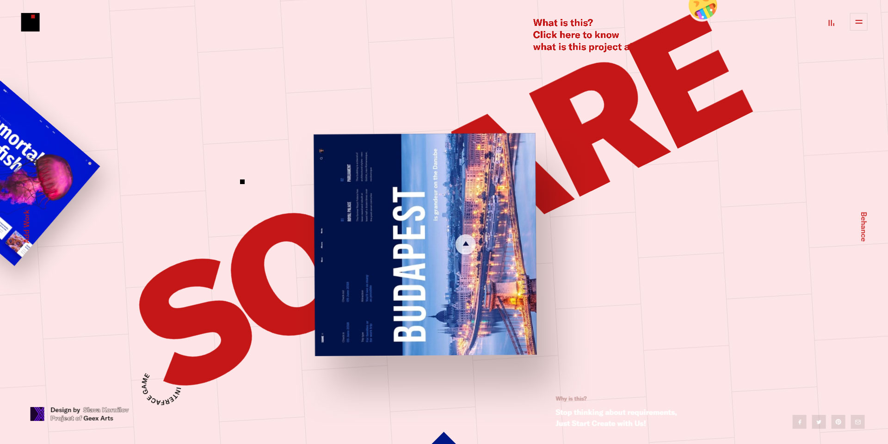

square.geex-arts.com
Square is a bizarre behance archive that kind of gives you a headache.
To be completely honest, I'm not sure if I like this website, or hate it. Frankly, it doesn't give you enough breathing room to be able to decide, but that is a feat worth acknowledging all the same. From the moment you enter the website, the barrage of light sound and movement is unrelenting.
Essentially, you are in a landscape made from sparsely arranged floating thumbnails of designers work. The word "SQUARE" floats in gigantic point size in the middle of the screen, and tips nauseatingly too and fro and you move the cursor around attempting to navigate. when your cursor approaches the edge of the window, the landscape moves accordingly. Every motion, click, scroll, sets into effect some new sequence of movement, colour, and sound. There is loud electro-pop playing the whole time. Though I spent probably 20 minutes "exploring" square, I'm still not totally sure what I've seen. bizarre